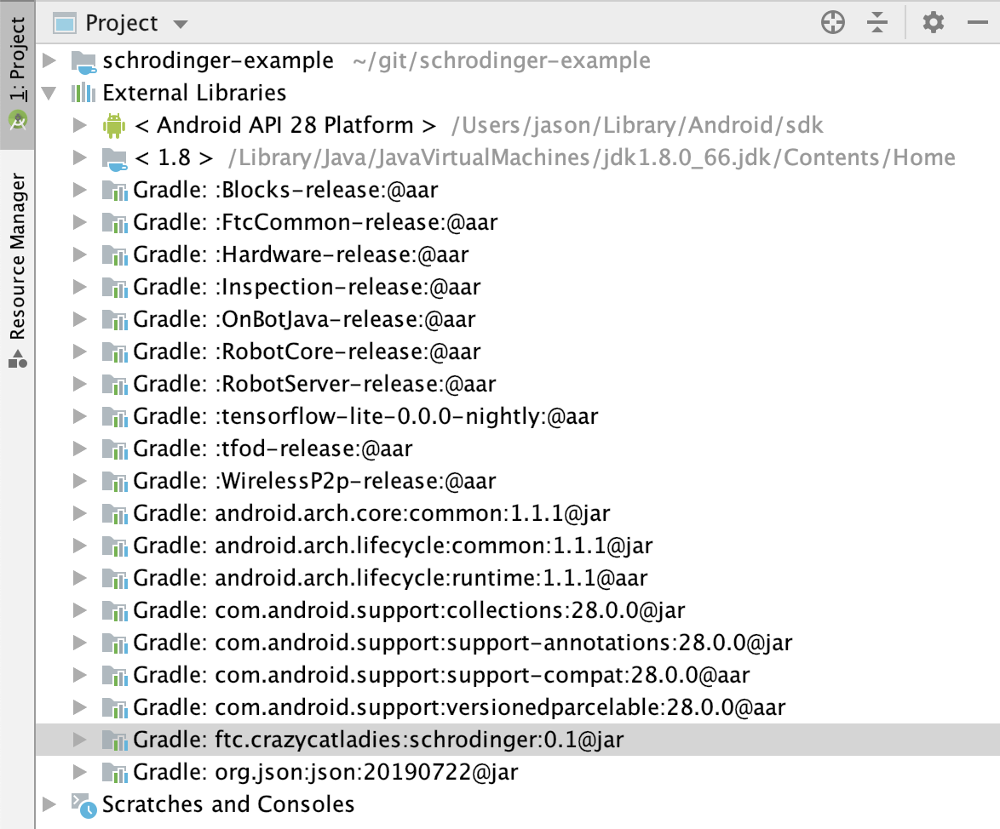

Last Updated: 2020-05-05
Schrodinger is a Java library for use in FTC robot control systems that helps with building state machines.
A state machine is the combination of a number of states and a number of transitions between them. The subject of a state machine occupies only one state at a time. The library is named after Erwin Schrödinger, who's thought-experiment about a cat in a box involved subatomic particles in multiple states simultaneously. Fortunately, this library is much easier to understand than quantum physics!
State machines are particularly useful in an FTC robot control system because it is usually not desirable for code execution to stop and wait while some condition changes. State machines allow other operations to run during the waiting period and code execution is repeatedly returned to the waiting state. This is particularly useful when state management is required for multiple components moving and waiting simultaneously in the robot.
An example of where state machines are useful is for robots in a tele-operated mode. Take, for instance, a driver-controlled robot that plays tennis. After swinging the racket, the driver would like to continue to move the robot while the racket is drawn back again. A state machine can manage the operation of the racket while the robot continuously moves in response to the driver's commands.
In this codelab, you're going to create op modes for an FTC robot that use the Schrodinger library to implement state machines.
If you do not already have Android Studio installed, follow the instructions for Installing Android Studio
If you are familiar with git, create a new clone of the FTC project repository on your computer. Otherwise, just follow these instructions for Downloading the Android Studio Project Folder
You'll need to let Android Studio (the gradle build system, really) know from where it can download the schrodinger library. Add maven { url 'https://dl.bintray.com/crazycatladies/maven' } to the repositories section at the bottom of the build.gradle file in the root folder of your project.
/**
* Top-level build file for ftc_app project.
*
* It is extraordinarily rare that you will ever need to edit this file.
*/
buildscript {
repositories {
google()
jcenter()
}
dependencies {
classpath 'com.android.tools.build:gradle:3.4.1'
}
}
// This is now required because aapt2 has to be downloaded from the
// google() repository beginning with version 3.2 of the Android Gradle Plugin
allprojects {
repositories {
google()
jcenter()
maven { url 'https://dl.bintray.com/crazycatladies/maven' }
}
}You'll make your project dependent on schrodinger, which will cause Android Studio (gradle, really) to download the library, by adding implementation 'ftc.crazycatladies:schrodinger:0.1' to the end of the dependencies section in TeamCode/build.release.gradle
dependencies {
implementation project(':FtcRobotController')
implementation (name: 'RobotCore-release', ext: 'aar')
implementation (name: 'Hardware-release', ext: 'aar')
implementation (name: 'FtcCommon-release', ext: 'aar')
implementation (name: 'WirelessP2p-release', ext:'aar')
implementation (name: 'tfod-release', ext:'aar')
implementation (name: 'tensorflow-lite-0.0.0-nightly', ext:'aar')
implementation 'ftc.crazycatladies:schrodinger:0.1'
}Schrodinger uses Java 8 features, and you'll probably want to do the same in your own code. You can enable Java 8 by changing the compileOptions section in build.common.gradle (in the root folder of the project):
compileOptions {
sourceCompatibility JavaVersion.VERSION_1_8
targetCompatibility JavaVersion.VERSION_1_8
}After changing and saving these files, you should be able to update gradle by clicking "Sync Now" in the bar which appears at the top of these files:
If everything has gone well, your project will now reference the downloaded schrodinger external library, which you can see in the "Project" view of the Project window:

Create a new Java class in the org.firstinspires.ftc.teamcode package of the TeamCode module called SchrodingerTeleOpMode. If you're not sure how to create an op mode class, refer to Creating and Running an Op Mode (Android Studio)
Start by adding basic code which will display the x & y values for the left stick of gamepad1.
package org.firstinspires.ftc.teamcode;
import com.qualcomm.robotcore.eventloop.opmode.LinearOpMode;
import com.qualcomm.robotcore.eventloop.opmode.TeleOp;
@TeleOp(name="SchrodingerTeleOp")
public class SchrodingerTeleOpMode extends LinearOpMode {
@Override
public void runOpMode() throws InterruptedException {
waitForStart();
while (opModeIsActive()) {
telemetry.addData("x", gamepad1.left_stick_x);
telemetry.addData("y", gamepad1.left_stick_y);
telemetry.update();
}
}
}Test this out with a gamepad connected to your Driver Station phone.
We'll add a simple state machine to this op mode that starts a 5-second countdown when the A button is pressed on the gamepad. In a real FTC robot control system, a state machine would coordinate a more complicated series of operations, but this simple example already enables one to see how state machines provide for management of simultaneous sequences of actions.
First, at the top of runOpMode(), above waitForStart(), declare the StateMachine variable sm and initialize the data logger. The StateMachine is defined with the Integer type, since this is the object type for the context variable that is provided and kept with the state machine.
StateMachine<Integer> sm = null;
final int SECONDS = 5;
DataLogger.createDataLogger(new OpModeTime(this), this.getClass().getSimpleName());After waitForStart(), add the initialization of the state machine in this block:
if (opModeIsActive()) {
sm = new StateMachine("A button countdown");
sm.repeat((state, seconds) -> {
if (gamepad1.a) {
state.next();
}
});
sm.repeat(((state, seconds) -> {
double secsInState = state.getTimeInState().seconds();
telemetry.addData("sm-countdown", (int)(seconds - secsInState));
if (secsInState > seconds) {
state.next();
}
}));
sm.setLooping(true);
sm.init(SECONDS);
}These instructions perform the following steps:
At the top of the while loop, add sm.run() to repeatedly run the state machine. Note when you run the op mode that the stick telemetry feedback continues during the countdown.
The entire class is as follows:
package org.firstinspires.ftc.teamcode;
import com.qualcomm.robotcore.eventloop.opmode.LinearOpMode;
import com.qualcomm.robotcore.eventloop.opmode.TeleOp;
import ftc.crazycatladies.schrodinger.log.DataLogger;
import ftc.crazycatladies.schrodinger.opmode.OpModeTime;
import ftc.crazycatladies.schrodinger.state.StateMachine;
@TeleOp(name="SchrodingerTeleOp")
public class SchrodingerTeleOpMode extends LinearOpMode {
@Override
public void runOpMode() throws InterruptedException {
StateMachine<Integer> sm = null;
final int SECONDS = 5;
DataLogger.createDataLogger(new OpModeTime(this), this.getClass().getSimpleName());
waitForStart();
if (opModeIsActive()) {
sm = new StateMachine("A button countdown");
sm.repeat((state, seconds) -> {
if (gamepad1.a) {
state.next();
}
});
sm.repeat(((state, seconds) -> {
double secsInState = state.getTimeInState().seconds();
telemetry.addData("sm-countdown", (int)(seconds - secsInState));
if (secsInState > seconds) {
state.next();
}
}));
sm.setLooping(true);
sm.init(SECONDS);
}
while (opModeIsActive()) {
sm.run();
telemetry.addData("x", gamepad1.left_stick_x);
telemetry.addData("y", gamepad1.left_stick_y);
telemetry.update();
}
}
}While a state machine that runs sequentially to the end can be useful in itself for the reasons mentioned above, Schrodinger also allows for state machines to have internal loops or branches using the jump transition.
The code below replaces the initialization of the StateMachine object to add some additional complexity to our countdown. Now the third state will jump back to the previous state 50% of the time to repeat the countdown. You can imagine a need for something like this if a state machine needed to be able to recover automatically from some sort of failure.
sm = new StateMachine("A button countdown");
sm.repeat((state, seconds) -> {
if (gamepad1.a) {
state.next();
}
});
State<Integer> countdown = sm.repeat(((state, seconds) -> {
double secsInState = state.getTimeInState().seconds();
telemetry.addData("sm-countdown", (int)(seconds - secsInState));
if (secsInState > seconds) {
state.next();
}
}));
sm.repeat((state, seconds) -> {
if (Math.random() < 0.5) {
telemetry.addData("sm", "repeat countdown");
state.jump(countdown);
} else {
state.next();
}
});
sm.setLooping(true);
sm.init(SECONDS);Complicated state machines can be created which are defined more by jumping than following a sequence. For example, a state machine that can transition between any of four repeating states could be implemented with twelve jumps (each state to each other state).
In the previous examples, the state machine is initialized with the number of seconds to count down. The context for the state machine is defined to be a simple Integer object.
It is possible, however, to use much more complex types to provide and maintain a much more complex set of data for a Schrodinger state machine. You could use a data structure like an array, hash map, etc., or you can define your own class and provide an instance of this class in the initialization of the state machine, as shown below.
package org.firstinspires.ftc.teamcode;
import com.qualcomm.robotcore.eventloop.opmode.LinearOpMode;
import com.qualcomm.robotcore.eventloop.opmode.TeleOp;
import ftc.crazycatladies.schrodinger.log.DataLogger;
import ftc.crazycatladies.schrodinger.opmode.OpModeTime;
import ftc.crazycatladies.schrodinger.state.StateMachine;
@TeleOp(name="SchrodingerCustomContext")
public class SchrodingerCustomContext extends LinearOpMode {
public class SMContext {
int widgetDetected;
}
@Override
public void runOpMode() throws InterruptedException {
StateMachine<SMContext> sm = null;
DataLogger.createDataLogger(new OpModeTime(this), this.getClass().getSimpleName());
waitForStart();
if (opModeIsActive()) {
sm = new StateMachine("context demo");
sm.once((state, context) -> {
context.widgetDetected = (int)(3 * Math.random());
});
sm.pause(500);
sm.repeat((state, context) -> {
if (state.getTimeInState().seconds() < 1) {
telemetry.addData("widgetDetected", context.widgetDetected);
} else {
state.next();
}
});
sm.init(new SMContext());
}
while (opModeIsActive()) {
sm.run();
telemetry.update();
}
}
}In this example, data is collected in the first state that is needed again in the third state. An SMContext object is used to store it, in the widgetDetected field. You can imagine a real-world example of this where a robot uses a sensor to read a clue on the field that defines the location of a game element which the robot then travels to retrieve.
Also, notice that the second state on this state machine is created by using the pause() function. This makes for an easy way to create a state that waits for a servo to complete movement, for example.
One of the included benefits of Schrodinger is logging. As shown in the snippet below, a history is recorded of each execution of a step with timestamp information, and the string representation of the state machine's context. The context is not repeated again until it's string representation has changed - in order to decrease redundancy in the log.
{"opMode":"SchrodingerCustomContext","time":"1589034300710","t":"0.003"}
{"type":"SM","name":"context demo","execNum":1,"timeInState":"0.050104","state":"0","context":"SMContext{widgetDetected=0}","nextAction":"StateTransitionAction","t":"1.539"}
{"type":"SM","name":"context demo","execNum":1,"timeInState":"0.7363540000000001","state":"1","nextAction":"StateContinueAction","t":"1.539"}
{"type":"SM","name":"context demo","execNum":1,"timeInState":"1.380625","state":"1","nextAction":"StateContinueAction","t":"1.539"}
{"type":"SM","name":"context demo","execNum":1,"timeInState":"1.93651","state":"1","nextAction":"StateContinueAction","t":"1.539"}
...
{"type":"SM","name":"context demo","execNum":1,"timeInState":"491.933747","state":"1","nextAction":"StateContinueAction","t":"2.030"}
{"type":"SM","name":"context demo","execNum":1,"timeInState":"492.190934","state":"1","nextAction":"StateContinueAction","t":"2.030"}
{"type":"SM","name":"context demo","execNum":1,"timeInState":"492.44484","state":"1","nextAction":"StateContinueAction","t":"2.030"}
...
{"type":"SM","name":"context demo","execNum":1,"timeInState":"998.912496","state":"2","nextAction":"StateContinueAction","t":"3.035"}
{"type":"SM","name":"context demo","execNum":1,"timeInState":"999.291662","state":"2","nextAction":"StateContinueAction","t":"3.035"}
{"type":"SM","name":"context demo","execNum":1,"timeInState":"999.600621","state":"2","nextAction":"StateContinueAction","t":"3.035"}
{"type":"SM","name":"context demo","execNum":1,"timeInState":"999.890048","state":"2","nextAction":"StateContinueAction","t":"3.041"}
{"type":"SM","name":"context demo","execNum":1,"timeInState":"1000.1840060000001","state":"2","nextAction":"StateTransitionAction","t":"3.041"}